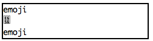
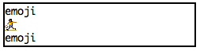
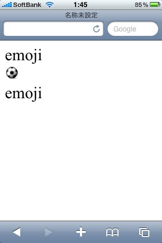

jpmobile + Rails 2.3.5 で作る携帯サイト入門 【後編】
- 概要
- Rails 2.3.5 について
- jpmobile とは
- jpmobile の機種判別の仕組み
- iPhone を判別する
- iPhone で絵文字
- まとめ
- リンク
- 著者について
- jpmobile + Rails 2.3.x で作る携帯サイト入門
概要
前回は jpmobile の基本的な機能を使った携帯サイトの構築方法を解説しました．今回は iPhone や Android といった新しいキャリア・端末への対応する方法を解説します．
Rails 2.3.5 について
2010年2月中旬現在の最新版は Rails 2.3.5 ですので，本記事では全て 2.3.5 を用いています．そのためタイトルが前回と少し変更されていますが，基本的にどちらのバージョンでも実行可能です．
jpmobile とは
Ruby 札幌所属の darashi さんが制作されている，携帯電話特有の機能を Ruby on Rails で利用するためのプラグインです．
ここで私は主に Rails 2.3 以降の対応と携帯メールの送受信機能の新規開発を担当しています．
jpmobile の機種判別の仕組み
今回は jpmobile で iPhone や Android といった新しい端末への対応方法を解説したいと思います． その前にまずは，jpmobile がどうやって機種・端末を判定しているのかを見てみましょう． jpmobile では「キャリアのクラス」「request.mobile.docomo? などのメソッド」「ビューの切り替え」という 3 つの機能で機種・端末の判定をしています．
キャリアのクラスを取得する
jpmobile では各キャリアごとに専用のクラスを用意しており，ActionController の request.mobile を通じてそのインスタンスを取得することができます． キャリアのクラスは，例えば docomo であれば lib/mobile/docomo.rb で定義されていて，各ファイルは autoload によって読み込まれるようになっています．
- lib/jpmobile.rb の抜粋
module Jpmobile
autoload :Email , 'jpmobile/email'
autoload :Emoticon, 'jpmobile/emoticon'
autoload :Position, 'jpmobile/position'
autoload :RequestWithMobile, 'jpmobile/request_with_mobile'
autoload :Util, 'jpmobile/util'
module Mobile
autoload :Docomo, 'jpmobile/mobile/docomo'
autoload :Au, 'jpmobile/mobile/au'
autoload :Softbank, 'jpmobile/mobile/softbank'
autoload :Vodafone, 'jpmobile/mobile/softbank'
autoload :Jphone, 'jpmobile/mobile/softbank'
autoload :Emobile, 'jpmobile/mobile/emobile'
autoload :Willcom, 'jpmobile/mobile/willcom'
autoload :Ddipocket, 'jpmobile/mobile/willcom'
def self.carriers
@carriers ||= constants
end
def self.carriers=(ary)
@carriers = ary
end
end
endrequest.mobile は lib/jpmobile/request_with_mobile.rb で定義されている mobile メソッドです．
- lib/jpmobile/request_with_mobile.rb の抜粋
module Jpmobile
module RequestWithMobile
def mobile
return @__mobile if @__mobile
Jpmobile::Mobile.carriers.each do |const|
c = Jpmobile::Mobile.const_get(const)
return @__mobile = c.new(self) if c::USER_AGENT_REGEXP && user_agent =~ c::USER_AGENT_REGEXP
end
nil
end
end
endJpmobile::Mobile.carriers は lib/jpmobile.rb に書かれているように，その時点で Jpmobile::Mobile で定義されている定数，つまりクラスの一覧を返します．request.mobile が呼ばれたときには，
いま定義されているキャリアのクラスのそれぞれにおいて，アクセスのあったユーザエージェントが，そのユーザエージェントの正規表現とマッチするかどうかを判定して，マッチしたクラスのインスタンスを返す
という処理を実行しています．これで適切なクラスのインスタンスが得られます． この一連の処理は lib/jpmobile/hook_request.rb によって Rails に組み込まれます．
- lib/jpmobile/hook_request.rb
require 'jpmobile/request_with_mobile'
class ActionController::Request
include Jpmobile::RequestWithMobile
endrequest.mobile.docomo? というメソッド
jpmobile では，例えば docomo からのアクセスであれば request.mobile.docomo? というメソッドが true を返す仕組みがあります． これは lib/jpmobile/mobile/abstract_mobile.rb で定義されています． さきほどのキャリアのクラスは，この Jpmobile::AbstractMobile を継承しているので，request.mobile.docomo? というメソッドを使うことができるようになります．
module Jpmobile
class AbstractMobile
Jpmobile::Mobile.carriers.each do |carrier|
carrier_class = Jpmobile::Mobile.const_get(carrier)
next if carrier_class == self
define_method "#{carrier.downcase}?" do
self.is_a?(carrier_class)
end
end
end
endビューの切り替え
前回説明したように，携帯端末と PC とでビューを切り替えるときに，たとえば index.html.erb / index_mobile.html.erb / index_mobile_docomo.html.erb の 3 つのファイルを用意することで，PC / 携帯 / docomo の表示を切り替えることができます． この処理は lib/jpmobile/hook_action_view.rb と lib/jpmobile/hook_action_controller.rb で行われています． Rails ではコントローラのアクション実行後や render メソッドを明示的に呼び出した場合などに，目的にあったビューファイルを選択するために，ActionView::PathSet#find_template メソッドを呼び出しています． jpmobile ではこの部分をフックして，キャリアに応じた独自のファイルが存在すればそれを，そうでなければ Rails 本来の処理を行うように変更しています．
iPhone を判別する
jpmobile でのキャリア判定処理は以上のようになっています． では実際に iPhone を例にとって追加してみましょう．今回はプラグインは変更せずに追加してみたいと思います． まずは前回を参考に jpmobile がインストールされた Rails アプリケーションを作成しておきます．
iPhone クラスの作成
まずは iPhone クラスを作成します．ここでは lib/jpmobile/mobile/softbank.rb をベースにしていきますが，Jphone / Vodafone クラスは今回は無関係なので削除します． さらに簡単のために位置情報と端末 ID も削除します．必要であればここに個別の実装を追加してください． そしてユーザエージェントの正規表現を iPhone 用に書き換え，クラス名を Iphone に変更すればクラスファイルの準備は完了です． このファイルを RAILS_ROOT/lib/jpmobile/mobile/iphone.rb として保存します．
# -*- coding: utf-8 -*-
module Jpmobile
module Mobile
# class Iphone < Softbank
class Iphone < AbstractMobile
# 対応するuser-agentの正規表現
USER_AGENT_REGEXP = /(iPhone)/
# cookieに対応しているか？
def supports_cookie?
true
end
end
end
endユーザエージェントをかなり簡単にしましたが，ここも適宜書き換えてください．
iPhone クラスの組み込み
さてクラスを作ってもそれだけでは jpmobile は判定して動作してくれません． 判定させるために Jpmobile::Mobile.carriers に Iphone クラスを追加します． この処理は config/environment.rb に追加します．
require 'lib/jpmobile/mobile/iphone.rb'
carriers = Jpmobile::Mobile.carriers
Jpmobile::Mobile.carriers = carriers.push("Iphone")iPhone 用ビューの作成
それではテストしてみましょう．まずは TopController を作成します．
$ ruby script/generate controller Top
exists app/controllers/
exists app/helpers/
create app/views/top
exists test/functional/
create test/unit/helpers/
create app/controllers/top_controller.rb
create test/functional/top_controller_test.rb
create app/helpers/top_helper.rb
create test/unit/helpers/top_helper_test.rb判定されていることを見るだけなので，index アクションのみ設定します．
- app/controllers/top_controller.rb
class TopController < ApplicationController
mobile_filter
def index
end
end次に PC 用 / 携帯用 / iPhone 用の 3 つのビューを作成します． ファイル名はそれぞれ index.html.erb / index_mobile.html.erb / index_mobile_iphone.html.erb とします．
- app/views/top/index.html.erb
PC- app/views/top/index_mobile.html.erb
mobile- app/views/top/index_mobile_iphone.html.erb
iPhoneサーバを起動してブラウザで確認してみてください．Firefox であれば FireMobileSimulator を使って PC / 携帯 / iPhone でアクセスすると，それぞれ PC / mobile / iPhone と判定されて用事されることがわかります．
iPhone で絵文字
: 
PC と携帯料対応のサイトを作成するうえで，iPhone を携帯として扱ってしまいたい場合もあるでしょう． その場合に絵文字をどうするかが問題となります．表示させるか表示させないかですが，前述のように jpmobile を request.mobile? => true として扱ってしまうと，絵文字を変換して表示しようとしてしまいます． しかし Iphone クラス用の絵文字の変換方法がわからないため，そのまま表示してしまいます．
このままでは見栄えが良くないので，表示させないようにする方法と，変換する方法を紹介します．
jpmobile の絵文字変換について
その前に jpmobile の絵文字変換について簡単に紹介しましょう．
jpmobile では絵文字変換を ActionController の around_filter で実現しています．around_filter なのは，
キャリアごとの絵文字コード -> 内部コード -> キャリアごとの絵文字コード
と前後で変換が必要だからです．実際のコードは lib/jpmobile/filter.rb に書かれています． ここで変換処理は下記のようにキャリアごとの場合分けされることになります．さきほどのは Iphone クラスの場合がないので，何も変換されなかったということです．
# 絵文字変換フィルタ
module Emoticon
# 絵文字Outer
# 外部エンコーディング(携帯電話側)とUnicode数値文字参照を相互に変換．
class Outer < Base
include ApplyOnlyForMobile
def to_internal(str, controller)
method_name = "external_to_unicodecr_" +
controller.request.mobile.class.name[/::(\w*)$/, 1].downcase
if Jpmobile::Emoticon.respond_to?(method_name)
Jpmobile::Emoticon.send(method_name, str)
else
str # 対応する変換メソッドが定義されていない場合は素通し
end
end
def to_external(str, controller)
# 使用する変換テーブルの決定
table = nil
to_sjis = false
case controller.request.mobile
when Jpmobile::Mobile::Docomo
table = Jpmobile::Emoticon::CONVERSION_TABLE_TO_DOCOMO
to_sjis = true
when Jpmobile::Mobile::Au
table = Jpmobile::Emoticon::CONVERSION_TABLE_TO_AU
to_sjis = true
when Jpmobile::Mobile::Jphone
table = Jpmobile::Emoticon::CONVERSION_TABLE_TO_SOFTBANK
to_sjis = true
when Jpmobile::Mobile::Softbank
table = Jpmobile::Emoticon::CONVERSION_TABLE_TO_SOFTBANK
end
Jpmobile::Emoticon::unicodecr_to_external(str, table, to_sjis)
end
end
# 絵文字Inner
# Unicode数値文字参照とUTF-8を相互に変換
class Inner < Base
include ApplyOnlyForMobile
def to_internal(str, controller)
Jpmobile::Emoticon::unicodecr_to_utf8(str)
end
def to_external(str, controller)
Jpmobile::Emoticon::utf8_to_unicodecr(str)
end
end
endOuter クラスの to_external メソッドで絵文字をどの形式に変換するかを指定しています．
iPhone 用絵文字変換テーブルの作成
さて iPhone は絵文字をどう指定すれば表示できるのでしょうか．前回，docomo の携帯電話でサッカーボールの絵文字を  で指定したように，jpmobile ではビューで絵文字を指定するときに UTF-8 の数値参照を使います．WEB&NETWORK絵文字一覧01によれば，softbank の携帯電話ではサッカーボールの絵文字は  で表示されます．また，ke-tai.orgによると，iPhone の場合は UTF-8 の数値参照ではなく，Unicode の数値参照を指定すれば表示されるようです．
jpmobile の絵文字変換テーブルは lib/emoticon/conversion_table.rb にあります． 上記の  から  への変換を探してみても見つかりません． jpmobile では Softbank の絵文字は UTF-8 コードで +0x1000 だけずらされているので， ではなく  への変換をテーブルから探します． すると Jpmobile::Emoticon::CONVERSION_TABLE_TO_SOFTBANK の中で下記の指定が見つかります．
0xE656=>0xF018,
では実際に console で変換してみましょう．絵文字は Jpmobile::Emoticon::unicodecr_to_external メソッドで変換するので，下記のようになります．
$ ruby script/console
Loading development environment (Rails 2.3.5)
>> Jpmobile::Emoticon::unicodecr_to_external("絵文字 です", Jpmobile::Emoticon::CONVERSION_TABLE_TO_SOFTBANK, false)
=> "絵文字\e$G8\017です"この “\e$G8\017” というのは Softbank 携帯で絵文字を表示するときに使うウェブコードです． では実際に  が Jpmobile::Emoticon::unicodecr_to_external メソッドでどのように変換されているかを見てみましょう．
def self.unicodecr_to_external(str, conversion_table=nil, to_sjis=true)
str.gsub(/&#x([0-9a-f]{4});/i) do |match|
unicode = $1.scanf("%x").first
if conversion_table
converted = conversion_table[unicode] # キャリア間変換
else
converted = unicode # 変換しない
end
# 携帯側エンコーディングに変換する
case converted
when Integer
# 変換先がUnicodeで指定されている．つまり対応する絵文字がある．
if sjis = UNICODE_TO_SJIS[converted]
[sjis].pack('n')
elsif webcode = SOFTBANK_UNICODE_TO_WEBCODE[converted-0x1000]
"\x1b\x24#{webcode}\x0f"
else
# キャリア変換テーブルに指定されていたUnicodeに対応する
# 携帯側エンコーディングが見つからない(変換テーブルの不備の可能性あり)．
match
end
when String
# 変換先がUnicodeで指定されている．
to_sjis ? Kconv::kconv(converted, Kconv::SJIS, Kconv::UTF8)
: converted
when nil
# 変換先が定義されていない．
match
end
end
endまず str.gsub によって数値参照の 16 進数部分がマッチし，その後 scanf メソッドにより数値 unicode = 0xe656 へと変換されます． 変換テーブル Jpmobile::Emoticon::CONVERSION_TABLE_TO_SOFTBANK からこれは converted = 0xF018 に変換され，次の case 文で when Integer の節が実行されます． 最終的に SOFTBANK_UNICODE_TO_WEBCODE でウェブコードに変換されます．
さて iPhone の場合はここではウェブコードではなく Unicode に変換しなければなりません． また今回は数値参照で表示したいので，変換テーブルを自作することにします． とは言っても絵文字自体は Softbank のものを使うので，ここでは Jpmobile::Emoticon::CONVERSION_TABLE_TO_SOFTBANK を元にして Jpmobile::Emoticon::CONVERSION_TABLE_TO_IPHONE を作成したいと思います．
Jpmobile::Emoticon::CONVERSION_TABLE_TO_SOFTBANK は絵文字数値参照コードを Softbank 絵文字の Unicode + 0x1000 の数値に変換しています． これを「Softbank 絵文字の Unicode」の数値参照に変換すればいいので，下記のようになります．
module Jpmobile
# 絵文字の変換テーブル
module Emoticon
CONVERSION_TABLE_TO_IPHONE = Hash[*(CONVERSION_TABLE_TO_SOFTBANK.map do |k, v|
if v.kind_of?(Integer)
[k, sprintf("&#x%x;", v - 0x1000)]
else
[k, v]
end
end).flatten]
end
endこれを RAILS_ROOT/lib/jpmobile/mobile/iphone.rb に追加して実際に試してみます．
$ ruby script/console
Loading development environment (Rails 2.3.5)
>> Jpmobile::Emoticon::CONVERSION_TABLE_TO_IPHONE[0xE656]
=> ""これで変換テーブルができました．では次に変換処理に組み込みます．変換テーブルは Jpmobile::Filter::Emoticon::Outer.to_external メソッドで決定されているので，この部分を上書きします．
module Jpmobile
# 絵文字変換処理
module Filter
module Emoticon
class Outer
alias to_external_without_iphone to_external
def to_external(str, controller)
case controller.request.mobile
when Jpmobile::Mobile::Iphone
# iPhone の場合は変換してすぐに返す
Jpmobile::Emoticon::unicodecr_to_external(str, Jpmobile::Emoticon::CONVERSION_TABLE_TO_IPHONE, false)
else
to_external_without_iphone(str, controller)
end
end
end
end
end
end: 
request.mobile のクラスが Iphone であった場合は自作の変換テーブルで変換し，それ以外は元の処理に委譲するようにしました． ではこれも RAILS_ROOT/lib/jpmobile/mobile/iphone.rb に追加して確認してみましょう．script/server を再起動して FireMobileSimulator で確認します．
画像ではソフトバンク絵文字が表示されています．ソースコードを確認すると確かに  に変換されていることがわかります．
emoji<br />

<br />
emoji実機で表示させるとこのようになります． 
文字コード変換
さてこれでいいようですが，このままでは文字コードが Shift_JIS となってしまっています．jpmobile では request.mobile が Softbank / Vodafone クラスとなる機種以外を Shift_JIS に変換してしまいます． そこでこの部分を上書きして，Iphone クラスも変換しないようにしてみましょう．変換処理は Jpmobile::Filter::Sjis.apply_incoming? で実行するかどうか判定しているので，ここを書き換えます．
module Jpmobile
module Filter
# 漢字コード変換処理
class Sjis
alias apply_incoming_with_iphone? apply_incoming?
def apply_incoming?(controller)
if controller.request.mobile.kind_of?(Jpmobile::Mobile::Iphone)
false
else
apply_incoming_with_iphone?(controller)
end
end
end
end
endこれでようやく iPhone 用の絵文字処理ができました．かなり入り組んでいるのですが，jpmobile がどのようにして変換しているのかが垣間見えたでしょうか．
絵文字を表示させないようにする方法
では最後に絵文字を表示させないようにしてみましょう．絵文字を表示させないようにするには，先程の絵文字変換テーブルで変換先を空文字列にしてしまえば大丈夫です．
module Jpmobile
# 絵文字の変換テーブル
module Emoticon
CONVERSION_TABLE_TO_IPHONE = Hash[*(CONVERSION_TABLE_TO_SOFTBANK.map do |k, v|
[k, ""]
end
).flatten]
end
endこれで絵文字は空文字列に変換されるので，表示されなくなります．
絵文字対応のまとめ
今回作成した iPhone 用のファイルは以下のようになります．絵文字は表示させる方のコードです．
# -*- coding: utf-8 -*-
module Jpmobile
module Mobile
# class Iphone < Softbank
class Iphone < AbstractMobile
# 対応するuser-agentの正規表現
USER_AGENT_REGEXP = /(iPhone)/
# cookieに対応しているか？
def supports_cookie?
true
end
end
end
# 絵文字の変換テーブル
module Emoticon
CONVERSION_TABLE_TO_IPHONE = Hash[*(CONVERSION_TABLE_TO_SOFTBANK.map do |k, v|
if v.kind_of?(Integer)
[k, sprintf("&#x%x;", v - 0x1000)]
else
[k, v]
end
end).flatten]
end
module Filter
# 漢字コード変換処理
class Sjis
alias apply_incoming_with_iphone? apply_incoming?
def apply_incoming?(controller)
if controller.request.mobile.kind_of?(Jpmobile::Mobile::Iphone)
false
else
apply_incoming_with_iphone?(controller)
end
end
end
# 絵文字変換処理
module Emoticon
class Outer
alias to_external_without_iphone to_external
def to_external(str, controller)
case controller.request.mobile
when Jpmobile::Mobile::Iphone
# iPhone の場合は変換してすぐに返す
Jpmobile::Emoticon::unicodecr_to_external(str, Jpmobile::Emoticon::CONVERSION_TABLE_TO_IPHONE, false)
else
to_external_without_iphone(str, controller)
end
end
end
end
end
end少し複雑ですが，それほど長くない行数で iPhone に対応させることができました．
まとめ
今回は iPhone 対応を紹介しましたが，同じようにクラスを追加すれば Android やスマートフォンにも対応可能です．また対応させる上で必要な jpmobile の内部構造も，一部ですが紹介することができました．「もっとこうしたい！」と言う方はぜひ開発に参加してみてはいかがでしょうか．
リンク
- HP
- RDoc Documentation
- GitHub
- Mailing List
- IRC Channel
- #jpmobile@freenode.net
著者について
Rust/OGAWA (@conceal_rs)
300 万人規模の携帯向けメーリングリストサービスを Ruby on Rails で構築・運用している人
jpmobile / termtter のコミッターでもある．